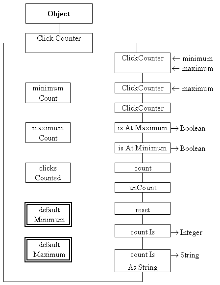

This book is concerned with the development of user interfaces, not with the production of the applications to which the interfaces provide access. One of the most basic software engineering principles is to divide a specification into separate concerns and to implement each concern as an independent program module. For specifications which include a graphical user interface this would imply that the application and its interface should be developed independently. This design principle has the consequence of allowing the application modules to be reused with differing styles of user interface, or even used in embedded applications which do not have any direct interaction with a user.
Design Advice
Keep the application and interface functionality clearly separated in the design and consequently in the implementation.
In order to concentrate on user interfaces the detailed design and implementation of the application level classes will not be presented in the text. Appendix B includes the source code of some of the application classes which are used throughout the book.
For this initial example an application known as a ClickCounter will be developed. It is based upon the small mechanical devices which are sometimes used to count people as they enter a room. The device consists of a counting button and a numeric display; every time the counting button is pressed the value on the display is incremented by one. A second button is used to reset the display to zero.
The application level object which implements this requirement has had its functionality extended beyond this minimal requirement for reasons which will be described below. The class diagram of the ClickCounter class is shown in Figure 1.1.

Figure 1.1 ClickCounter application class diagram.
A class diagram illustrates the resources which instances of a class will supply, details of the class diagram notation used in this book are given in Appendix C. This diagram indicates, at the top, that the ClickCounter class is an extension of the pre-supplied Java Object class. Each instance of the class contains three encapsulated data attributes: minimumCount, maximumCount and clicksCounted. As encapsulated resources they are totally private to the class and cannot be seen or referenced from anything outside the class
The minimumCount and maximumCount attributes delineate the range of values which the ClickCounter will count through and the clicksCounted attribute is the current number of occurrences counted. The class also contains two private class wide constant attributes for the DEFAULT_MINIMUM and DEFAULT_MAXIMUM of the range; in this implementation they are set to 0 and 999.
Resources shown crossing the right side of a class diagram are fully public and so are totally visible outside the class. The first three of these resources have the same name as the class and so are constructors. The purpose of a constructor is to create an instance of the class and place it into a well defined initial state.
The first constructor has two arguments, shown as in coming data flows labeled minimum and maximum, which allow the range of values to be counted between to be fully specified. The second constructor requires only the maximum value to be specified using DEFAULT_MINIMUM for the minimum value. The last constructor uses the defaults for the minimum and maximum values.
The next two public resources are inquiry methods which can be used to determine the state of the private resources. These two methods both return a Boolean value, as shown on the outgoing data flow. The first of these methods is called isAtMaximum() and will return true if the value of clicksCounted is equal to the value of maximumCount, and false otherwise. The isAtMinimum() method is similar but compares the values of clicksCounted and minimumCount,
The following three methods embody the essential functionality of the click counter. The count() method will increment the value of clicksCounted unless it is at its maximum value in which case the value will not be changed. The unCount() method will likewise decrement the value of clicksCounted unless it is at its minimum. The reset() method will reset the value of clicksCounted to the minimum value as established upon construction. The final two resources are inquiry methods which return the value of the ClickCounter as an integer and as a three character String formatted with leading zeros.
One difference between the functionality of the mechanical click counter and of this software model concerns its behaviour at the maximum limit of its range. If a mechanical click counter is at the maximum of its range, a press of its counting button will cause its value to change to the minimum of the range. This software model will not do this and will not even give any warning if the count() method is called when it is at its maximum. The consequences of this consideration will be explored below.